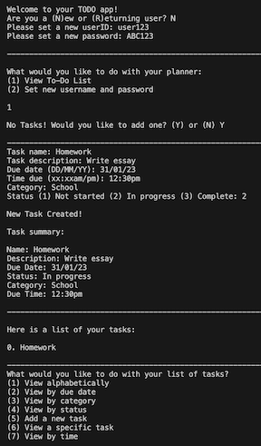

Other Projects
Hiking Trail Mapper
 This program asks the user to input the names of two hiking destinations in Hong Kong, one to start at and one to end at.
It outputs the length of the shortest route to get between those two destinations and any sightseeing spots in between them.
The solver uses Dijkstra's algorithm to compute the shortest path.
This program asks the user to input the names of two hiking destinations in Hong Kong, one to start at and one to end at.
It outputs the length of the shortest route to get between those two destinations and any sightseeing spots in between them.
The solver uses Dijkstra's algorithm to compute the shortest path.
Recycling Locations
 Hong Kong has a notoriously low recycling rate, however, in recent times, more and more recycling stations are popping up to make recycling more accessible and convenient for citizens. Many communities have a recycling station near them, but many people don't actually know this. This program asks the user to input the district that they live in, then uses BFS to output all recycling stations in Hong Kong ranked from closest to farthest from where the user lives (based on MTR station distances). That way, people can easily choose which recycling stations are nearest to their houses to go to. It also tells the user which stations are on the same MTR line to make it even more convenient and lets the user choose whether they want to see the full address or not.
Hong Kong has a notoriously low recycling rate, however, in recent times, more and more recycling stations are popping up to make recycling more accessible and convenient for citizens. Many communities have a recycling station near them, but many people don't actually know this. This program asks the user to input the district that they live in, then uses BFS to output all recycling stations in Hong Kong ranked from closest to farthest from where the user lives (based on MTR station distances). That way, people can easily choose which recycling stations are nearest to their houses to go to. It also tells the user which stations are on the same MTR line to make it even more convenient and lets the user choose whether they want to see the full address or not.
TODO App

TODO app where users can create and manage TODOs.
Functions include:
- Setting username and password with verification
- Reset their username and password
- View TODO list
- Sort alphabetically, by due date, category, time, or status
- Add, edit, view a TODO
- Update the status and details of a TODO
- View a TODO summary